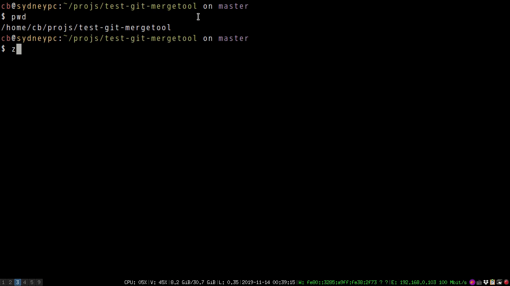

Emacs is the best merge tool for Git
I used to regard vimdiff as the best merge tool for Git because it's simply fast.
See the demo how I use vimdiff to resolve conflicts from https://github.com/redguardtoo/test-git-mergetool.

The only issue is Vim is not as powerful as Emacs.
Resolving conflicts is NOT only pick up a difference (hunk) from either remote branch or local branch. My usual workflow is placing my difference into sub-window containing merged buffer first, then I go to sub-window of remote branch and copy code snippet into merged buffer. So there are lots of sub-windows operations.
In Emacs, I use ace-window and winum to move focus between sub-windows. I can also use API window-configuration-to-register and jump-to-register to save/load windows layout. Besides, Ediff is a beast to handle diff and patch.
So I give one example to prove why Emacs should be a better merge tool in theory. If you are good at both Vim and Emacs, you know it's the truth.
I don't want to waste time on theory. Let's come back to the real world problem. And I will show you a perfect solution to this problem soon.
The problem is, I never use Emacs to resolve merge conflicts until now.
There are two reasons.
First reason, My Emacs configuration uses too many packages. It starts up too slow after I have used up all the optimization tricks on it. As you can see from vimdiff demo video, git mergetool restarts the editor frequently. So the editor should be as lightweight as possible.
Second reason, the UI of ediff is not right. The best UI should be similar to vimdiff. All operations should be completed freely in any sub-window instead of ediff control panel only.
Luckily, Emacs gives me the full freedom to solve the problem. And the result is beyond my expectation.
Here is the solution.
Insert below code into ~/.gitconfig,
[mergetool.ediff]
# use git mergetool ediff to resolve conflicts
cmd = emacs -nw -Q --eval \"(setq startup-now t)\" -l \"~/.emacs.d/init.el\" --eval \"(progn (setq ediff-quit-hook 'kill-emacs) (if (file-readable-p \\\"$BASE\\\") (ediff-merge-files-with-ancestor \\\"$LOCAL\\\" \\\"$REMOTE\\\" \\\"$BASE\\\" nil \\\"$MERGED\\\") (ediff-merge-files \\\"$LOCAL\\\" \\\"$REMOTE\\\" nil \\\"$MERGED\\\")))\"
In above code, option -Q equals -q --no-site-file --no-splash. Actually, only -q is critical. -q means "Do not load an init file". A global emacs lisp flag startup-now is defined before loading ~/.emacs.d/init.el.
Then in ~/.emacs.d/init.el, I need only add one line,
(when (not (boundp 'startup-now))
;; heavy weight configuration happens here
)
When startup-now is defined, all the heavyweight configuration should be off. Considering in this scenario, we are using Emacs only as merge tool, 99% configuration could be turned off. For example, set up for any programming language is not required. Flyspell and flycheck should be off. Yasnippet is also useless.
I only need focus on essential operations related to text/file/window.
Evil should be used. At the beginning of this article, I said "I love vimdiff because it's fast". It's impossible to be more efficient without Evil.
Any patch/diff utilities should be included too. counsel/swiper/ivy is also must have because I can use counsel-git to find file and counsel-git-grep to grep text.
Native Emacs API is enough to save/load windows layout.
We need focus on merged buffer window when Emacs starts because that's where we do the most text editing things.
This set up happens in ediff-startup-hook,
(defun ediff-startup-hook-setup ()
;; hide control panel if it's current buffer
(when (string-match-p (setq my-ediff-panel-name (buffer-name))
"\*Ediff Control Panel.*\*")
;; move to the first difference
(ediff-next-difference)
;; move to the merged buffer window
(winum-select-window-by-number 3)
;; save the windows layout
(window-configuration-to-register ?a)))
(add-hook 'ediff-startup-hook 'ediff-startup-hook-setup)
Please note I use winum-select-window-by-number from winum to set default window focus. You can use any other third packages or native API select-window instead.
Saving initial windows layout into register a is achieved by (window-configuration-to-register ?a) in ediff-startup-hook. (jump-to-register ?a) restores the saved layout.
Then we need make sure ediff commands can be used everywhere. The trick is "move focus to ediff panel temporarily to execute its commands, then move focus back to original window".
So I designed a macro my-ediff-command to do this,
(defmacro my-ediff-command (cmd &optional no-arg)
`(lambda (&optional arg)
(interactive "P")
(let* ((w (get-buffer-window)))
;; go to panel window
(select-window (get-buffer-window my-ediff-panel-name))
;; execute ediff command, ignore any error
(condition-case e
(if ,no-arg (funcall ,cmd) (funcall ,cmd arg))
(error
(message "%s" (error-message-string e))))
;; back to original window
(select-window w))))
Usage is simple,
(global-set-key (kbd "C-c C-y") (my-ediff-command 'ediff-next-difference))
Here is the list of essential ediff commands,
- ediff-next-difference
- ediff-previous-difference
- ediff-restore-diff-in-merge-buffer
- ediff-revert-buffers-then-recompute-diffs
- ediff-copy-A-to-C
- ediff-copy-A-to-C
- ediff-copy-both-to-C
You can use Hyra or General.el to assign key bindings.
The definition of ediff-copy-both-to-C,
;; @see https://stackoverflow.com/a/29757750/245363
(defun ediff-copy-both-to-C (&optional arg)
"Copy code from both A and B to C."
(interactive)
(ediff-copy-diff ediff-current-difference nil 'C nil
(concat
(ediff-get-region-contents ediff-current-difference 'A ediff-control-buffer)
(ediff-get-region-contents ediff-current-difference 'B ediff-control-buffer))))
Here is my ~/.gitconfig= and my ediff set up in real world.
Please note the techniques introduced here can be used with other VCS (subversion, perforce …).
Demo on using Emacs to resolve merge conflicts,
